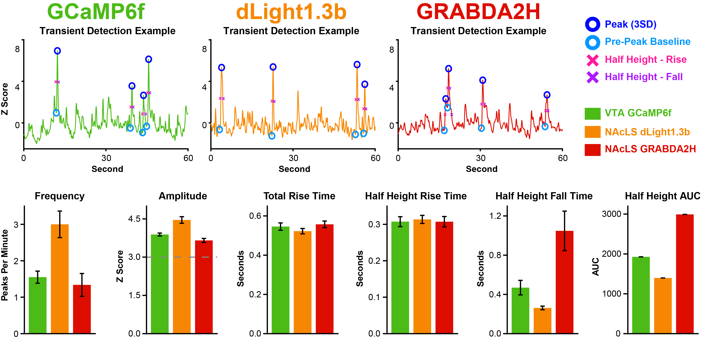

Transient Detection and Quantification
Transient detection is a critical component of fiber photometry analyses, identifying relevant increases in sensor activation. Previous tools and packages have used a sliding window approach, where all values above an absolute threshold are counted as peaks. Here, we present a novel method of peak detection where each peak is compared to a local baseline and amplitude is calculated and compared to a threshold to determine inclusion. This allows for consistent parameters across the session and reliable detection of individual events despite signal absolute value fluctuation.
Transient Event Detection
Transients are detected as peaks with a greater amplitude than the specified threshold. To determine amplitude, first a pre-peak baseline must be identified.
PASTa includes three options: window minimum (minimum value within user defined pre-peak window size, e.g. 800ms), window mean (mean of user defined pre-peak window), or local min (absolute local minimum preceding the peak). The amplitude threshold is set by the user, and recommended to be 3SDs. If data are normalized in Z scores, then the criterion is an increase of 3 from baseline. If not, the user inputs the actual value that corresponds to 3SDs in the data stream.
Transient Event Quantification
Multiple features of transient events can be quantitatively analyzed and compared. Peak detection functions automatically calculate numerous variables for each transient to characterize aspects of both event rise and fall. PASTa includes flexible functions to group transients in the most experimentally relevant manner, such as by time window or experimental condition.
-
Frequency: Characterized as peaks per minute. Frequency can be analyzed as whole session frequency, or peaks can be divided into time bins or experimental phases (ITI, during trial, etc).
-
Amplitude: The height of the event from the pre-peak baseline to the max peak. Note that all events will be at least the value of the set threshold (default 3SD).
-
Rise and Fall Time: Transient rise and fall are measured by default from half height to peak and output in samples and ms. This allows for analysis of separate rise and fall dynamic shifts. The quantification height to be measured from can be manually adjusted if desired.
-
Width: Transient width is measured as the width from the pre-peak quantification height (defaults to half height) location to the post-peak quantification height location. This is equivalent to the rise plus the fall.
-
AUC: Total area under the curve from half height to peak, calculated via the trapezoidal method. Prior to AUC calculation, each transient is linearly transformed so pre-peak baseline is equal to zero. If the height to be measured from is adjusted for rise and fall time, it will also be adjusted for AUC.
 Figure 6: Transient example with labeled detection parameters and output variables.
Figure 6: Transient example with labeled detection parameters and output variables.
Comparison of Transient Events with VTA GCaMP6f, NAcLS dLight1.3b, and NAcLS GRABDA2H
 Figure 3: Transient detection and quantification examples for A) GCaMP6f, B) dLight1.3b, and C) GRABDA2H. Transients were detected with a threshold of 3SD and an 800ms window minimum pre-peak baseline. Bar plots of group means by sensor for D) average whole session peak frequency, E) mean peak amplitude, F) total peak rise time from pre-peak baseline to peak, G) rise time from half height to peak, H) fall time from peak to half height, and I) half height AUC. Overall, individual sensor results align well with published kinetics.